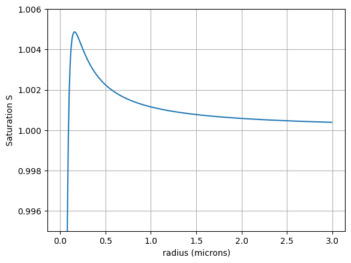

Worksheet9: Koehler Equilibrium solution#
import json
from pathlib import Path
import numpy as np
import matplotlib.pyplot as plt
from scipy import optimize
from a405.thermo.constants import constants as c
from collections import namedtuple
This worksheet is designed to get you familiar with the Koehler equation for a specific aerosol.
The download link for worksheet9_koehler_solution.ipynb
Question 1#
Plot the Kohler curve (Thompkins equation 4.15, and Fig. 4.13) for an aerosol:
where \(e_\chi\) is the equilibrium vapor pressure over a curved surface with water and ions, and \(e_{s\, \infty}\) is the equilibrium vapor pressure over pure water with a flat surface (i.e. the Clausius-Clapeyron equation)
Download this aerosol_file into the same folder as your notebook
# load the properties of ammonium sulphate from JSON file
filename = Path("ammonium_sulphate.json")
with open(filename) as infile:
ammonium_sulphate = json.load(infile)
ammonium_sulphate
{'Ms': 132,
'Mw': 18.0,
'Sigma': 0.075,
'vanHoff': 3.0,
'rho': 1775,
'mass': 1e-19,
'comments': 'ammonum sulfate (NH4)2SO4'}
Making dictionaries more convenient#
The function below creates new claases of named tuples, which are more
convenient to use in equations than dictionaries because instead of typing a['Sigma'] you can type a.Sigma. Once you’ve defined the namedtuple class, you pass it a dictionary and
it will generate a named tuple with attributes matching the dictionary keys. My make_tuple wrapper combines the namedtuple creation and the instance definition so you can turn a dictionary into a named tuple in one step.
def make_tuple(in_dict: dict,tupname='values'):
"""
make a named tuple from a dictionary
Parameters
----------
in_dict: dictionary
Any python object with key/value pairs
tupname: string
optional name for the new namedtuple type
Returns
-------
the_tup: namedtuple
named tuple with keys as attributes
"""
#
# create the class/type tup_class
#
tup_class = namedtuple(tupname, in_dict.keys())
#
# create an instance of the class with in_dict values
#
the_tup = tup_class(**in_dict)
return the_tup
The namedtuple version#
ammonium_sulphate = make_tuple(ammonium_sulphate)
ammonium_sulphate
values(Ms=132, Mw=18.0, Sigma=0.075, vanHoff=3.0, rho=1775, mass=1e-19, comments='ammonum sulfate (NH4)2SO4')
def find_S(r, aerosol, Temp):
"""
calculates supersaturation S given an aerosol dictionary,
temperature T, and droplet radius r
uses Thompkins 4.15
Parameters
----------
r: radius (m)
aerosol: named tuple with attibutes: Sigma (N/m^2), vanHoff (int), Mw (kg/kmol), Ms (kg/kmol), mass (kg)
Temp: temperature (K)
Returns
-------
S: saturation (unitless)
"""
# your code here
a=(2.*aerosol.Sigma)/(c.Rv*Temp*c.rhol) #curvature term
b=(aerosol.vanHoff*aerosol.mass*aerosol.Mw)/((4./3.)*np.pi*c.rhol*aerosol.Ms) #solution term
S = 1 + a/r - b/r**3.
return S
# In this cell create a vector of radii r and use find_S to get the corresponding S values
r = np.arange(0.01,3,0.01)*1.e-6
Temp = 280.
the_S = find_S(r,ammonium_sulphate, Temp)
the_S[:10]
array([-8.65024495, -0.16275021, 0.67697792, 0.87642143, 0.94508561,
0.97413238, 0.98810976, 0.99543528, 0.99950102, 1.00184178])
# In this cell make an (x,y) plot of (r,S)
fig, ax = plt.subplots(1,1)
ax.plot(r*1.e6,the_S)
ax.set_ylim([0.995,1.006])
ax.set_xlabel('radius (microns)')
ax.set_ylabel('Saturation S')
ax.grid(True)

Question 2 – rootfinding the equilibrium radius#
Use our rootfinder to find the equilibrium radius for a haze particle at a relative humidity of 90% and a temperature of 15 deg C
def find_r(RH,aerosol,Temp,leftbracket,right_bracket):
def S_diff(r,RH,aerosol,Temp):
Senv=RH*0.01
Sequil=find_S(r,aerosol,Temp)
the_diff = Senv - Sequil
print(f"{r=},{Sequil=},{Senv=}")
return the_diff
args = (RH,aerosol,Temp)
equil_r = optimize.brentq(S_diff,
left_bracket,
right_bracket,
args = args)
return equil_r
left_bracket = 1.e-8
right_bracket = 1.e-6
RH = 90
the_r = find_r(RH,ammonium_sulphate,Temp,left_bracket,right_bracket)
print(f"\nequilibribum haze radius at {RH=} percent is {the_r*1.e6:.3f} microns")
r=1e-08,Sequil=-8.650244951369707,Senv=0.9
r=1e-06,Sequil=1.0011510446939125,Senv=0.9
r=9.896243471630616e-07,Sequil=1.0011629047272623,Senv=0.9
r=4.998121735815308e-07,Sequil=1.0022442757670016,Senv=0.9
r=2.549060867907654e-07,Sequil=1.0039642322378441,Senv=0.9
r=1.324530433953827e-07,Sequil=1.0045610791788981,Senv=0.9
r=7.122652169769135e-08,Sequil=0.9892699464769273,Senv=0.9
r=4.0613260848845675e-08,Sequil=0.8827921018518972,Senv=0.9
r=4.556067386723811e-08,Sequil=0.9222115351660237,Senv=0.9
r=4.277297173658657e-08,Sequil=0.9023364887771813,Senv=0.9
r=4.25147830161906e-08,Sequil=0.9002137211415143,Senv=0.9
r=4.2489107357110654e-08,Sequil=0.8999996843228435,Senv=0.9
r=4.2490107357110675e-08,Sequil=0.9000080305564703,Senv=0.9
equilibribum haze radius at RH=90 percent is 0.042 microns